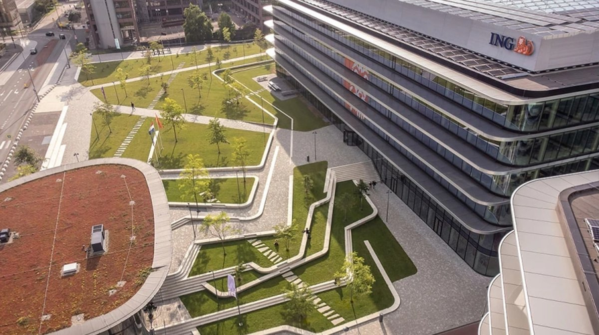
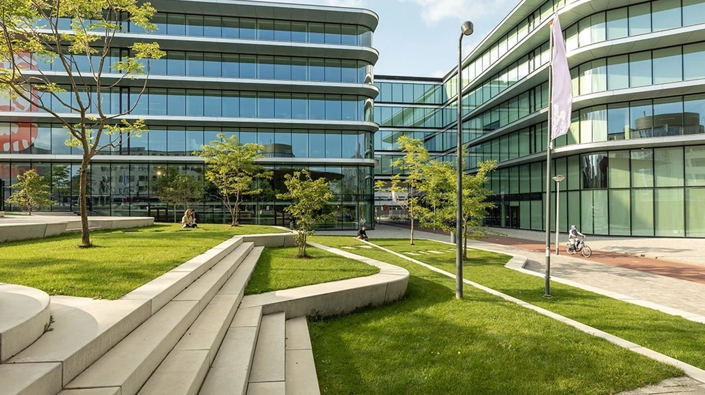

SREday is a worldwide series of community events for engineers who build, ship and run modern software systems. Across cities around the world, we bring together people working in reliability, cloud, DevOps, observability and production engineering to share real-world experience, connect with their local community and explore how these disciplines are evolving in the age of AI.
Bijlmerdreef 106
1102 CT Amsterdam, Netherlands


We’ve all been there. It’s 3 a.m., an alert just fired, and you’re staring at a dashboard. The P99 latency is spiking, but the average looks fine. The CPU is high, but the load average is normal. What’s actually going on? The hard truth is that most of our dashboards are subtle liars. They lie by averaging percentiles, hiding the real user pain. They lie with poorly chosen time windows that miss the crucial spike. They lie because we're forced to guess: is this a counter or a gauge? Can I sum this? Is a line graph even the right way to look at this? We expect every engineer on our team to also be a part-time statistician, and at 3 a.m., that’s a recipe for disaster. In this talk, I'll share stories of how misleading dashboards have sent teams down the wrong rabbit hole during critical incidents. We'll dissect the common lies and half-truths our monitoring tells us every day. Then, we'll talk about the alternative: building "opinionated" observability. It's about baking our expertise and best practices directly into our tools, so the right chart appears by default, the alert already has context, and the system guides you to the right questions. This isn't just about making prettier graphs. It's about giving back our most valuable resource time, and letting engineers get back to being engineers, not full-time data analysts. What you'll get from this talk: How to spot the 3 most common ways your dashboards are probably lying to you. A simple mental model for choosing the right visualization for the job (and knowing when a line graph is a terrible choice). Practical ways to start baking your team's expertise and "tribal knowledge" into your monitoring with smart defaults. How to argue for, or build, "opinionated" tools that stop wasting your team's time and lead to faster, more accurate incident response.
Shyam Sreevalsan builds products at the intersection of AI, observability, and open source. He leads product and strategy at Netdata, democratizing observability, one metric at a time.
Dashboards were invented for a world without AI. They encode assumptions about human cognition, scanning, pattern recognition, correlation, that AI now handles better. This contrarian talk argues that the future of operational observability isn't better dashboards, but AI agents that render dashboards obsolete for the decisions that matter. We'll examine: The dashboard's original sin: Assumptions that worked for small systems but fail at scale What AI-native observability actually looks like: Concrete examples from production systems The transition path: Pragmatic stages from AI augmentation to dashboard sunset The human role in AI-native operations: Why this isn't about replacing humans Based on three years of building AI observability systems, including conversational interfaces that replace manual investigation and ML anomaly detection achieving 10⁻³⁶ false positive rates, this talk challenges you to reconsider whether dashboards are helping or hindering your operational excellence.
Costa Tsaousis is the Founder and CEO of Netdata. Since 1995, Costa has been actively working on internet-related startups. He has been a co-founder and C-level executive of many successful projects, including Internet Service Providers, Cloud Hosting Providers, and Fintech startups. With a passion for innovation and open-source, he now leads Netdata, a monitoring solution aiming to simplify and modernize infrastructure observability for all of us.
during this session we will show Self-Service DevOps Assistant (SDA). SDA is a cloud-agnostic Al assistant built for DevOps, SRE, and platform engineering teams. It connects your cloud infrastructure, CI/CD pipelines, issue trackers, code repositories, and knowledge base into a single interface - and answers engineering questions in natural language, based on what is actually happening in your environment right now
In my current role at Andersen, I am responsible for partnership with major Cloud Services Providers and Neo-cloud to build products and solutions at the intersection of AI, Data and Cloud technologies
Do you trust your AI coding assistant? What if I told you that attackers have found ways to manipulate it and attack your code? With everyone now using AI coding assistants it’s time to look at the risks! During this talk I’ll show you several new techniques attackers are already using. This will range from hidden messages (ASCII smuggling) to abusing mistyping and characters that look the same (typosquatting). I will also show how an LLM can make mistakes when generating code (hallucinations). Did you know that a smart attacker can abuse this too? When you join this talk, you’ll learn how to spot hidden text in your instruction file and prompts. I will also explain how to set up a trusted dependency repository to prevent the malicious code from entering your production environment!
Active in the IT industry since 2012, Leo Visser is a Subject Matter Expert for Azure and AI Foundry at OGD. He advises organizations on AI, automation, and cloud architecture, combining tools like PowerShell, Power Platform, Azure Logic Apps, and native Azure services. His work strongly focuses on security, sustainability, and long-term value. Leo is a Microsoft PowerShell MVP.
How do you plan for unplanned incidents? You practice with Chaos Engineering. Strong incident response doesn’t just happen, you have to build the skills and train your team. Practicing for major incidents gives your team insight into how your applications will behave when something goes wrong as well as how the team will interact to solve problems. Combining your Incident Response practices with Chaos Engineering roots your response practice in real-world scenarios, helping your team build confidence.
Daniel Afonso is a Senior Developer Advocate at PagerDuty, SolidJS DX team member, Instructor at Egghead.io, and Author of State Management with React Query. Daniel has a full-stack background, having worked with different languages and frameworks on various projects from IoT to Fraud Detection. He is passionate about learning and teaching and has spoken at multiple conferences around the world about topics he loves. In his free time, when he's not learning new technologies or writing about them, he's probably reading comics or watching superhero movies and shows.
Ephemeral Environments (EEs) replace long-lived shared environments with on-demand, isolated infrastructure. They improve reliability and developer velocity, but they also fundamentally change how infrastructure costs behave. If every pull request spins up its own environment, costs can quickly become unpredictable. What used to be a fixed, always-on expense turns into a dynamic system driven by engineering activity. In this talk, we explore the FinOps implications of adopting Ephemeral Environments from an SRE perspective. Instead of focusing on specific tools or optimizations, we’ll examine how teams rethink cost control when infrastructure becomes short-lived and event-driven. We’ll discuss the trade-offs between environment fidelity and cost, how lifecycle-driven infrastructure changes spending patterns, and how reducing shared environment failures can offset infrastructure growth. This session is about understanding the cost model behind Ephemeral Environments, and how to adopt them without losing financial control.
Marcos Novelli Harispe is a Fullstack Engineer and ORT University Lecturer focused on scalable AWS cloud systems. He specializes in event-driven architectures, Data Lakes, and infrastructure as code (Terraform), with extensive experience migrating production microservices to serverless. Equal parts hands-on engineer and educator, Marcos is passionate about reliability, observability, and mentoring the next generation of tech talent.
Every engineer remembers their worst incident. Mine taught me something uncomfortable: our systems were fine within the hour. It was us, the engineers, that took all night. The people scrambled. Since then, one question keeps bugging me: why do we test everything except our own response? We chaos-test infrastructure and load-test services, but the people component remains untested. This talk is about closing that gap through rehearsal. We look through the lens of incident simulations, and I'll share what I've learned: what breaks first in a team under pressure (communication, not competence), why your most experienced engineer can be your biggest liability, and how a team that has practiced its worst day performs when the real one arrives.
Niek is a tech lead at Schuberg Philis. He designs, builds, and runs mission critical infrastructure solutions and is an expert in reliability engineering. Niek’s practical, no-nonsense style and engaging delivery help technical leaders and engineers effectively navigate the complex balance between reliability, security, and delivering business value.
Every SRE team knows their clusters are overprovisioned. But how much exactly, and where? I kept asking this question on our EKS clusters. kubectl top gives percentages, not dollars. AWS Cost Explorer sees instances, not pods. Every tool that connects the two wanted me to deploy Helm charts, agents, and dashboards. I just wanted a number. So I built Burn — an open-source CLI that reads your kubeconfig, fetches real-time pricing from AWS and Azure APIs, and gives you per-namespace cost breakdown in 30 seconds. No agent, no dashboard, no cluster changes. Running it on production, I found 33% idle capacity ($117/month on a 5-node cluster), a pod requesting 500m CPU but using 0.12m, and debug pods nobody remembered deploying. I deleted the waste that same day. In this talk I'll cover: - How Burn splits node cost into CPU and RAM using ratio-based pricing - Why P95 metrics matter more than averages for rightsizing - How we detect Ingress-based load balancers that other tools miss - Honest trade-offs of an agentless approach vs full platforms like Kubecost Attendees will leave knowing how to identify idle resources, understand Kubernetes cost allocation math, and evaluate the right level of cost tooling for their clusters.
Cloud/DevOps Engineer who enjoys solving complex problems and building efficient, scalable systems. My expertise includes Kubernetes, AWS, and CI/CD pipelines, with a strong focus on automating processes to simplify developers' workflows. Additionally, I maintain a supercomputer (HPC) at NEU IBM Center, ensuring it runs at peak performance for high-demand tasks. Creator of Burn, an open-source Kubernetes FinOps CLI.
Modern applications often outgrow simple API key or role-based access models, especially in multi-tenant and microservice environments. This talk explores how OpenFGA enables fine-grained, relationship-based authorization to model complex access patterns such as “user X can access resource Y because they belong to team Z.” We’ll walk through real-world scenarios where traditional RBAC breaks down, demonstrate how OpenFGA implements Google Zanzibar–inspired authorization, and show how to integrate it into cloud-native platforms and APIs. Attendees will leave with practical patterns, architecture guidance, and lessons learned from implementing authorization as a standalone service in modern platform architectures.
Ankit Asthana is a Senior Cloud & Platform Architect Engineer at SQUER, with over 13 years of experience across AI infrastructure, DevOps, SRE, and platform engineering. He specializes in building secure, scalable cloud-native systems on Kubernetes and AWS, and works at the intersection of platform engineering and AI-driven workloads. Ankit is an active community contributor and regularly speaks at meetups on topics such as developer platforms, policy-as-code, and modern authorization systems. Dastan Oryngali is a Senior Software Developer with over eight years of experience building robust backend systems, scalable microservices, and cloud-based solutions. Throughout his career, he has driven key engineering initiatives across diverse industries, including fintech, consulting, and compliance. Specialized in Java, Spring Boot, and React, Dastan focuses on crafting high-performance architecture and seamless full-stack applications.
Modern operations teams are overwhelmed by dashboards, alerts, logs, vulnerability reports, documentation, and operational data. The challenge is no longer collecting information—it's helping engineers make the right decision quickly. In this session, I'll share the engineering journey behind AskPeter, an AI-powered engineering assistant designed to help production teams investigate incidents, understand system behaviour, analyse vulnerabilities, and retrieve operational knowledge using natural language. Rather than replacing engineers, AskPeter acts as an engineering teammate, combining observability data, operational telemetry, documentation, and AI reasoning to reduce investigation time and improve decision-making. I'll walk through the architecture, design decisions, challenges, security considerations, and lessons learned while introducing AI into real production engineering workflows. This isn't another AI demo—it's an honest engineering story about building AI that engineers can actually trust.
Caner Şahan is a Principal Solution Architect with over 15 years of experience designing enterprise platforms for retail and mission-critical operations. His work focuses on Enterprise Architecture, AI-powered Operations, Observability, DevOps transformation, and Platform Engineering. He is the creator of AskPeter, an AI engineering assistant that combines production telemetry, operational knowledge, and enterprise data to help engineers troubleshoot complex systems more efficiently. Caner is passionate about applying AI to solve real engineering challenges while keeping reliability, security, and operational excellence at the centre of every solution.
What engineering leaders can learn from Site Reliability Engineering? At first glance, SRE feels like a deeply technical concern: uptime dashboards, infrastructure capacity, on-call rotations. But core SRE concepts are deeper than they seem. Definitions of service criticality, Service-Level Indicators, Service-Level Objectives, and error budgets are not just technical speak. These ideas can be applied far beyond production environments. This talk explores how core SRE concepts can become high-leverage leadership tools for shaping team culture, guiding prioritization, and driving meaningful business outcomes.
Maxim Schepelin is a solution architect at Booking.com and coauthor of Engineering Manager's Compass, a practical guide to the everyday realities of engineering leadership. Over fifteen years, he's built products used by millions of people every day—and picked up a thing or two about exiting both Vim and Emacs along the way.
Varnish is a well-known reverse open source HTTP caching proxy that accelerates websites, applications, files, and any other HTTP-base type of workload. The technology has been around for more than 15 years and powers millions of active websites. While Varnish is considered a stable and reliable piece of acceleration software, there hasn't been a lot of hype surrounding the project. The recent release of Varnish version 9 deserves a bit of hype. In this presentation, Thijs will explain the major new features of Varnish 9, which include TLS support, dynamic backends, OTEL support, and a wide range of exciting modules. He’ll show you how to use them to apply a more intelligent caching layer to your web stack. Thijs will also explain some major changes in the way the open source project is run, and will present some cloud-native additions to the project like Docker images, Helm Charts, and even a Varnish-powered Kubernetes Gateway Controller.
As the Technical Evangelist at Varnish Software, Thijs Feryn focuses on web performance, software scalability, and content delivery. He demonstrates content-driven and technical messaging through presentations, videos, books, blog posts, social media posts, podcasts, and other media. Thijs is a published author and wrote Getting Started with Varnish Cache and Varnish 6 by Example. As a public speaker, he has a track record of over 380 presentations in 26 different countries, where he is often praised for his energetic and engaging presentation style. As an evangelist, Thijs is also active in many open-source communities, most notably the Varnish and PHP community. He has contributed to various communities for over 15 years both technically and as an organizer and facilitator. Prior to joining Varnish Software, Thijs Feryn spent 15 years in the web hosting industry, tackling web performance and scalability issues on a daily basis and evangelizing these topics. For more information about Thijs’ past & upcoming presentations, please visit https://feryn.eu/speaking.
Platform engineering is entering a new phase: infrastructure is no longer only provisioned through pipelines, templates, and tickets, but increasingly through agentic workflows that can understand intent, reason over platform standards, generate changes, and help operate production systems. In this session, we will explore how agentic approaches can reshape the platform engineering and SRE lifecycle, from infrastructure creation to incident response. Through a live demo, we will first use GitHub Copilot to provision cloud infrastructure by working with repository context, infrastructure-as-code patterns, and platform conventions. Then we will shift into operations and show how Azure SRE Agent can support proactive incident management through detection, diagnosis, response planning, and guided remediation. While the demo uses GitHub Copilot and Azure SRE Agent, the focus is not on a particular service or product. The real discussion is about reusable patterns: how to design agent-ready platforms, how to encode organizational standards as context, how to keep humans in control, and how to introduce safe autonomy into infrastructure and reliability workflows. Attendees will leave with a practical mental model for agentic platform engineering: where agents can help, where guardrails are essential, and how platform teams can evolve from ticket-driven enablement toward intent-driven, context-aware operations.
What I actually do : I draw boxes and lines and say the word "Kubernetes" a lot. Recently i'm prompting too much while letting Github Copilot do all the magic. https://www.dailydoseofghcp.com/ What LinkedIn says I do : After completing a Bachelor’s in Electronics Engineering and a Master’s in Computer Science, I started my career at HPE (then HP) working in pre-sales around x86 server technologies during the Alpha Server era. I later joined Intel, where I evangelized the tick-tock story of Xeon processors across CEE & MEA.Next came AWS, where I had the opportunity to work as AM, SA and TAM with several fast-growing companies including Opsgenie (now Atlassian), Gram Games (now Zynga), Trendyol (now Alibaba) and Yemeksepeti (now Delivery Hero). In 2019 I moved to the Netherlands as a Partner Solutions Architect, helping expand the AWS partner ecosystem across EMEA and later working directly with enterprise customers in the BENELUX region. Most recently, I joined Microsoft as an AI & Cloud Architect, working with Digital Natives and Startups across EMEA.
Teams spend a lot of time defining functional and non-functional requirements, writing acceptance criteria, and verifying behavior in controlled environments. That work matters, but it can also lead teams to optimize for test environments while real incidents emerge in production. Production is where systems meet latency, dependency failures, retries, partial outages, and degraded behavior. Most incidents do not come from one obviously broken service. They happen in the gaps between services, where assumptions were never made explicit and failure modes were never explored. In this talk, we give a practical introduction to chaos engineering as a way to close that gap. Not as a dramatic exercise in breaking everything, but as a disciplined way to learn how systems behave under stress. By running small, intentional experiments, teams can test assumptions, uncover weak spots before they become incidents, and better understand how their systems really behave in production. One of the biggest lessons is that reliability often improves before the first experiment even runs. As soon as teams start asking “what if?” questions together, they surface hidden assumptions and identify practical changes worth making immediately. Attendees will leave with a better understanding of why incidents emerge between systems, how chaos engineering connects to a Site Reliability Engineering (SRE) mindset, and how to start with safe, small experiments in their own environment.
Jacob is a leader who inspires others through his commitment to learning, sharing knowledge, and fostering growth. With a strong foundation as a software developer, team lead, and technical consultant, he brings real-world experience to every role he takes on. Jacob actively guides organizations through changes, such as adopting Team Topologies, and supports teams by mentoring developers, creating development teams, and leading workshops. His hands-on approach ensures that his ideas are practical and grounded in experience. Driven by a passion for helping people and teams succeed, Jacob focuses on building strong, collaborative environments. He combines technical expertise with leadership to advocate for better ways of working and continuous improvement.
The fact that your homelab services don't run on several availability zones is no excuse not to have relatively high availability numbers. Your Home Assistant instance or your ad-blocking DNS server can be just as important as any other service. In this talk we're going to provide some practical tips for improving your homelab's reliability for cheap.
Ricard is a Lead Site Reliability Engineer at Cisco ThousandEyes' SRE team. Outside of business hours you can find him working on his homelab, which is what inspired this talk. Ricard is writing a book about homelabbing, so go talk to him if you have a homelab!
After five years of managing serverless databases, I have learned that my rollercoaster journey is very similar to the CPU usage you dream of seeing in the console. This session shares five hard-earned lessons learned while working with so-called serverless databases.
Renato has extensive experience as a cloud architect, tech lead, and cloud services specialist. Currently, he lives in Berlin and works remotely as a principal cloud architect. His primary areas of interest include cloud services and relational databases. He is an editor at InfoQ and a recognized AWS Data Hero.
Most SRE tooling waits for something to break, and Azure SRE Agent changes that. In this talk I'll show how far agentic SRE has come as an AI teammate that doesn't just respond to the 3 AM page, but continuously watches your production environment, reasons over it against best practices and authoritative guidance via MCP, and acts to keep it healthy. We'll go under the hood on what the agent can genuinely do in production today, where the honest limits of autonomy are, and how a governance model built on RBAC and human-in-the-loop keeps you in control.
Albert Tanure is a Senior Cloud Solutions Architect at Microsoft, based in the Netherlands, where he helps global enterprises modernize legacy systems, strengthen cloud resilience, and adopt agentic AI. A Docker Captain and Microsoft MVP, he's the author of ASP.NET Core 9 Essentials (Packt) and Jornada Cloud Native, and an active community voice through talks, mentoring, and writing on cloud-native architecture, DevOps, and AI-assisted engineering.
AI assistants have made writing code faster than ever, but they also introduce major risks—frequently shipping secrets, SQL injections, and flawed Infrastructure as Code (IaC) templates by default. While security tools exist to catch these errors, most require uploading source code to third-party SaaS clouds. This practical talk introduces Lomo CodeSecurity, an open-source, local-first security scanner built to run entirely on localhost. We will explore how to wire a local security gate into your daily development loop by orchestrating eight major industry scanners (including Trivy, Gitleaks, and Checkov) and optionally triaging findings using a local Ollama LLM—with zero cloud dependencies. Attendees will walk away knowing what AI-generated code consistently gets wrong, how to build offline AI security tooling, and see a live demo that goes from zero to a populated findings dashboard in just 90 seconds.
Mladen Maric is a seasoned infrastructure expert with a deep background in large-scale operations. He spent years as a Senior Site Reliability Engineer (SRE) at Zscaler, operating the Zero Trust Exchange at a scale of hundreds of billions of transactions per day. Prior to that, he spent nine years at Juniper Networks building SDN/NFV automation and hybrid clouds for major global telecommunications providers, including Deutsche Telekom and Orange. He is currently building open-source, privacy-first security tools for modern engineering workflows.
Every enterprise organization eventually faces a silent crisis: thousands of engineering teams managing tens of thousands of highly volatile delivery pipelines. When compliance logic, security gates, and audit controls are scattered across isolated YAML configurations, the platform team loses control. Developers facing tight deadlines are tempted to bypass gates, and sudden executive demands to migrate CI/CD vendors spark widespread chaos. CI/CD tools are not the brain; they are simply the execution hands. True delivery peace requires an immutable, vendor-neutral policy governance model. This talk provides a real-world architectural blueprint to decouple corporate governance from pipeline mechanics. We will walk through the construction of a centralized Policy Decision Point (PDP) using Open Policy Agent (OPA) and Rego. We will demonstrate how to inject mandatory Policy Enforcement Points (PEPs) at the infrastructure layer, completely removing governance from developer-controlled repositories.
Anand is a dynamic IT leader specializing in AIOps, Observability, Test Engineering, and Release Management. Previously IT Area Lead at ING Bank and an international digital transformation consultant, he excels at leading global teams and leveraging data-driven insights to boost productivity. Anand holds a B.E. in Computer Science from the Army Institute of Technology, Pune.
Finding performance issues in modern software is like finding a needle in a haystack and intuition on where to look first is often wrong. APerf is an open source tool we have used many times to help with performance debugging by looking “wide” before going “deep”. This session will present the tool along with an performance regression example
Nati is a Solutions Architect with AWS. He delights in helping customers simplify complex systems, teaching them about the inner workings of cloud services and debugging annoying technical oddities. When he is not at his computer he is soldering electronic kits, tinkering with smaller computers and drumming on a Taiko.
Modern IT organizations don’t deliver value through isolated teams—they deliver it through connected flows. This session introduces seven end-to-end value streams that form the backbone of a high-performing digital operating model. From strategy and portfolio, from idea to deployment, from detection to correction, and vulnerability to fix, and more. Learn how connecting these flows reduces handoffs, eliminates bottlenecks, and accelerates business outcomes. Learn a practical framework for making your IT organization truly flow.
Rob Akershoek is a Senior IT Management and DevOps Architect at DXC Technology and Chair of the IT4IT Forum within The Open Group. Recognized as one of the Top 25 Thought Leaders of 2024 by HDI, Rob is a leading voice in modern IT operating models and digital transformation. He helps organizations evolve into lean, agile, and compliant digital service providers capable of thriving in complex hybrid cloud and multi-vendor environments. His expertise spans the design and implementation of end-to-end IT operating models, IT process design and governance, streamlining IT value streams, and implementing modern DevOps toolchains. Rob specializes in aligning disciplines such as Enterprise Architecture (TOGAF), Lean Portfolio Management, (Scaled) Agile and DevOps, Cloud Operations, ITSM, FinOps, and Risk & Compliance. He is also known for architecting integrated DevSecOps toolchains that connect CI/CD, ITSM, observability, and security into cohesive, automated ecosystems. A frequent international speaker and published author, Rob is the lead author of the IT4IT Management Guide and co-author of the IT4IT Standard, contributing significantly to the advancement of IT management practices worldwide. Rob is a regular invited speaker at international conferences, webinars, and community events, where he shares his ideas on modern IT management and digital transformation. He has spoken at events organized by itSMF, DevOps communities, SMFS, SITS, ServiceSpace, and The Open Group.
How we are transforming our monitoring strategy: Moving from legacy, SNMP/Syslog-based monolithic tools to a modern, open-source distributed observability platform focused on end-user experience rather than just device health
Giovanni Pepe is a Sr Engineering Manager at Uber, currently responsible for the Corp Network and SRE teams. Razvan Mihai Cicu is a Senior Infrastructure Engineer with Uber, based in Amsterdam. He specializes in network automation and observability.
Site Reliability Engineering was never meant to be about firefighting, yet too many teams find themselves stuck in an endless cycle of pages, postmortems, and quick fixes. Why? Because SRE is full of hidden traps — patterns that look like best practices on the surface but slowly erode reliability, burn out engineers, and stall progress. In this talk, we’ll expose the 7 Deadly Traps of SRE, from the obsession with chasing “five nines,” to the cult of on-call heroism, to the false comfort of tooling and checklists. For each trap, we’ll unpack why it’s so seductive, how it quietly sabotages your team, and what to do instead. You’ll walk away with a clearer lens on the pitfalls holding SRE organizations back, and a practical playbook to help your team escape firefighting mode and reclaim the true purpose of SRE: building systems - and cultures - that are resilient, scalable, and human-friendly.
Miko Pawlikowski is an SRE Author and a platform engineer at Quadrature. He has led large-scale infrastructure and SRE initiatives at Citadel and Bloomberg, with deep expertise in Kubernetes, cloud computing, and chaos engineering. Passionate about building resilient systems and communities, he brings together engineers worldwide through conferences and media projects.